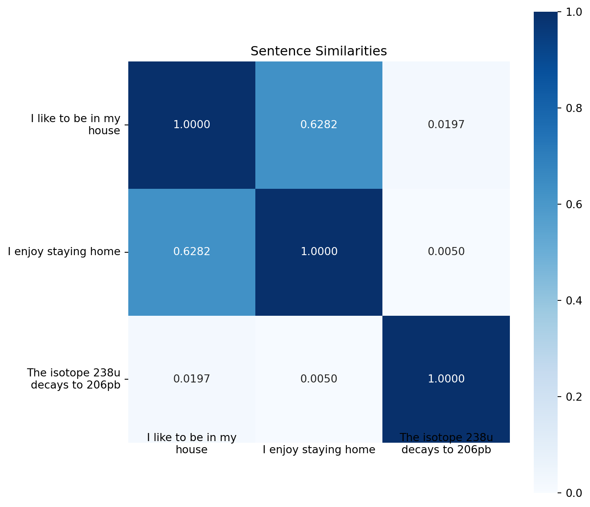

import torch
from sentence_transformers import SentenceTransformer
from sklearn.metrics.pairwise import cosine_similarity
import numpy as np
import matplotlib.pyplot as plt
import seaborn as sns
import textwrap
# Set NumPy print options to display numbers in decimal notation
np.set_printoptions(suppress=True, precision=6)
# Define our texts
texts = ["I like to be in my house",
"I enjoy staying home",
"The isotope 238u decays to 206pb"]
# Check if GPU is available and use it if possible
device = 'cuda' if torch.cuda.is_available() else 'cpu'
# Load the model
model = SentenceTransformer('all-MiniLM-L6-v2', device=device)
# Generate embeddings
embeddings = model.encode(texts)
# Compute pairwise similarities
similarities = cosine_similarity(embeddings)Small Similarity Example
Similarities Between Sentences
We will look at the similarities between 3 sentences:
- “I like to be in my house”,
- “I enjoy staying home”,
- “The isotope 238u decays to 206pb”
Clearly the first two sentences are very similar, and the last one is very different from the first two. We should see that reflected in the similarities that are computed from the embeddings.
First we compute the similarities between them
How many dimensions in our embedding?
print("Number of dimensions for sentence 1")
print(len(embeddings[0]))
print("Number of dimensions for sentence 2")
print(len(embeddings[1]))
print("Number of dimensions for sentence 3")
print(len(embeddings[2]))Number of dimensions for sentence 1
384
Number of dimensions for sentence 2
384
Number of dimensions for sentence 3
384The embedding for ‘I like to be in my house’
print("This is the embedding for 'I like to be in my house' (first 10 out of 384 entries)")
print(embeddings[0][:10])This is the embedding for 'I like to be in my house' (first 10 out of 384 entries)
[ 0.046026 -0.056287 0.052387 0.043776 0.03616 -0.06185 0.112183
-0.040373 0.043698 0.033041]The embedding for ‘I enjoy staying home’
print("This is the embedding for 'I enjoy staying home' (first 10 out of 384 entries)")
print(embeddings[1][:10])This is the embedding for 'I enjoy staying home' (first 10 out of 384 entries)
[ 0.057513 -0.038965 0.048497 0.017248 0.09397 0.004429 0.134942
-0.029034 -0.03668 -0.00274 ]The embedding for ‘The isotope 238 decays to 206pb’
print("This is the embedding for 'The isotope 238 decays to 206pb' (first 10 out of 384 entries)")
print(embeddings[2][:10])This is the embedding for 'The isotope 238 decays to 206pb' (first 10 out of 384 entries)
[-0.019025 0.001091 -0.042205 0.033524 -0.035777 -0.018052 -0.125355
0.003215 -0.013516 -0.033547]Now we create a heatmap that shows the similarities
# Create a heatmap
plt.figure(figsize=(8, 8))
ax = sns.heatmap(similarities, annot=True, cmap='Blues', vmin=0, vmax=1, square=True, fmt='.4f')
# Remove x-axis ticks
ax.set_xticks([])
# Set y-axis tick labels with wrapping
wrapped_texts = ['\n'.join(textwrap.wrap(text, width=20)) for text in texts]
ax.set_yticks(np.arange(len(texts)) + 0.5)
ax.set_yticklabels(wrapped_texts, rotation=0, ha='right')
# Add wrapped x-axis labels at the bottom
ax.set_xlabel('')
plt.xticks([])
for i, text in enumerate(texts):
wrapped_text = '\n'.join(textwrap.wrap(text, width=20))
plt.text(i + 0.5, len(texts) + 0.1, wrapped_text,
horizontalalignment='center',
verticalalignment='bottom',
rotation=0,
fontsize=10)
# Adjust the bottom margin to accommodate wrapped labels
plt.title('Sentence Similarities')
plt.tight_layout()
plt.subplots_adjust(bottom=0.2) # Increase bottom margin
plt.show()